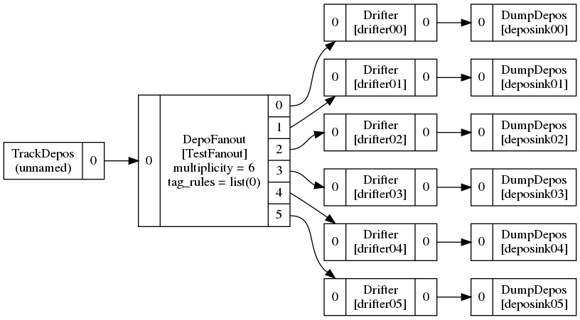
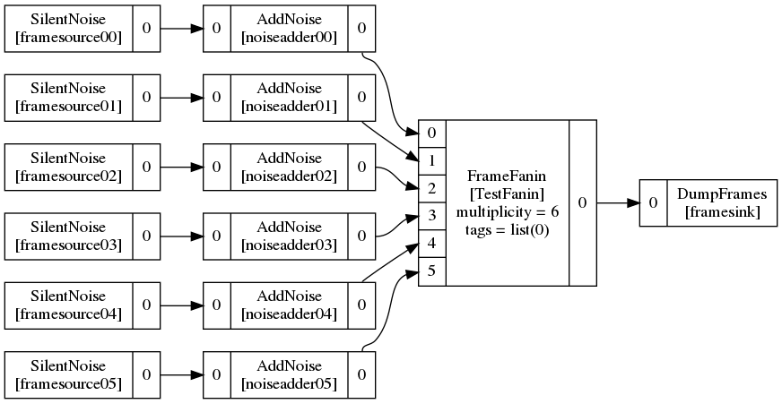
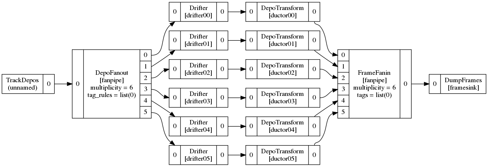
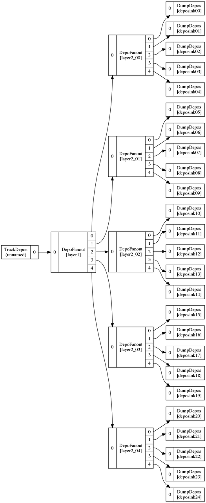

Wire-Cell fans
Of course, everyone is a fan of Wire-Cell. This post isn't about you. It's about a common pattern that is found in Wire-Cell data flow graphs and how this pattern is realized at the WCT C++ level and how to form it in WCT configuration.
This pattern we talk about is generally called a "fan" of which there are two variants: fanin and fanout.
- fanout : a map of one input to a number of outputs of the same type
- fanin : a map of a number of inputs of the same type to one output
Let's look at how fans are represented in Wire-Cell C++ and then in the configuration.
Fans at the C++ level
In Wire-Cell, a fanout node implements the IFanoutNode base and a
fanin implements IFaninNode base. These assure the fan-side ports
carry all the same type of data and that a fan multiplicity is honored
by the graph edges.
Fan multiplicity
The fan multiplicity needs some detail.
By default, it is set by a C++ template argument to IDepoFanout or
IDepoFanin. It is then used to set the size of the vectors returned
by the output_types() or input_types() methods required by the base
INode interface.
But in some cases, we want fanout and fanin nodes which may have the
fan multiplicity set at runtime (ie, by configuration). This is done
for example by DepoFanout by satisfying the requirement set by
IDepoFanout that it must supply output_types(). It does that by
accepting a "multiplicity" configuration argument which sets the size
of the vector of output ports at run time.
Multiplicity Limitations
There is one last implementation detail.
When Wire-Cell uses the multi-threaded graph execution engine based on
TBB the fanout nodes are mapped via the fanout category to a
tbb::flow::split_node type and the fanin nodes are mapped via the
fanin category to a tbb::flow::join_node.
This detail is important as there are two limits placed on the multiplicity.
At the WCT level, a translation between run-time and compile-time multiplicity is done in the TBB fanout category which exhaustively iterates over allowed sizes up to some max (currently 6 as of this writing). This limit can be trivially raised.
At the TBB level, the allowed maximum multiplicity depends on the
version and how it is compiled. Older TBB versions may be limited to
15 or less. Newer TBB requires modern C++ and uses variadic templates and std::tuple and may have a higher limit.
When pushing beyond the current max fan multiplicity of 6, explicit testing will be needed. At the end we will give some pointers.
Fans at the config level
Wire-Cell provides a Jsonnet module pgraph.jsonnet which provides
functions to help construct the flow graph configuration. In
particular it provides some fan-related functions under the fan
object. Below is a tour of its functions.
Caveat
This section presents some WCT configuration examples. While they are
syntactically correct, they are not guaranteed to be fleshed out to
properly provide all required information to be used to run a
wire-cell job.
Atomic fan node
No special help is needed to make a simple, atomic fanout of fanin node. For example, consider:
local g = import "pgraph.jsonnet";
local fanout = g.pnode({
type: "DepoFanout",
}, nin=1, nout=6);
This defines a 1-to-6 fanout of type DepoFanout. This is simple
enough, but the complexity comes in when one wants to attach many
nodes to the outputs. There the pgraph.jsonnet functions will help.
Construct a fanout subgraph
A fanout subgraph can be constructed with:
fan.fanout(fantype, pipelines, name="fanout", tag_rules=[])
This function constructs an aggregate pnode around an atomic fanout
type, which it also constructs into an atomic pnode in the aggregate.
The pipelines array hold pnodes, each of which will be attached to an
output of the fan.
It is specifically tested in test-fan-out.jsonnet which can be
visualized with:
$ jsonnet -J cfg cfg/test/test-fan-out.jsonnet > test-fan-out.json $ wirecell-pgraph dotify --jpath=-1 test-fan-out.json test-fan-out.dot $ dot -Tpng -o test-fan-out.png test-fan-out.dot

In this example, the TrackDepos and DumpDepos nodes are added in order
to produce a complete graph and are not required, per se, just for the
fanout subgraph.
Construct a fanin subgraph
A fanin subgraph can be constructed with:
fan.fanin(fantype, pipelines, name="fanin", outtags=[])
This function creates the opposite pattern as fan.fanout(). It is
tested in test-fan-in.jsonnet which can be visualized similarly to
the above:

Construct a "fan pipe"
A fan pipe can be constructed with:
fan.pipe(fout, pipelines, fin, name="fanpipe", outtags=[], tag_rules=[])
In the fan.fanout() example above, we had to manually make a fanin and
vice versa for the fan.fanin() example in order to "cap off" all ports
so that total graph is complete. The fan.pipe() function allows
joining these two patterns to result in an aggregate with one input
and one output (ie, a pipe).
This pattern is tested in test-fan-pipe.jsonnet which visualizes as:

General subgraph construction
The special fan functions described above help by creating an
aggregate node following a some special graph pattern. They all use
the intern() function for the "heavy lifting".
If no special fan function or other helper function builds a pattern
which is needed you may always use intern() directly. This is because
the intern() function performs arbitrary connections between a set of
"input nodes", "output nodes" and "internal nodes" in order to form a
single "aggregate node". Here is its calling interface:
intern(innodes=[], outnodes=[], centernodes=[],
edges=[], iports=[], oports=[], name="")
As is shown, all arguments are optional. These arguments are define as:
innodes- list of pnode node objects which will automatically (see
iports) have their input ports exposed as input nodes for the resulting aggregate node. outnodes- as above but for output ports
centernodes- nodes which expose no ports outside the resulting aggregate node.
edges- edges between output ports of inputs nodes, vice versa, or between ports of centernodes and output ports of input nodes or input ports of output nodes.
iports- explicitly list the ports to expose on the resulting
aggregate node. If empty, then it will automatic be determined from
the
innodes. oports- etc for output ports.
name- the name of the resulting pnode.
If you end up needing to use intern() directly consider if your
subgraph pattern is "specifically generic" enough (contradiction
noted!). If so, consider adding a new helper function to
pgraph.jsonnet so other people may benefit.
Multi-layer fans
When a fan multiplicity larger than the limit is required one can produce it from a "fan of fans", each of which keeps a multiplicity within the limit.
This pattern is exercised in the test file test-fan-fan.jsonnet and
we'll close out this overly long blog post with an overly long
visualization of this double-fanout:
